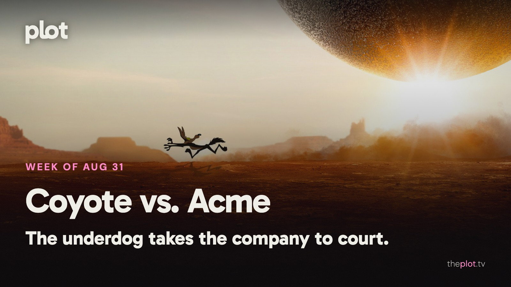

|
the week of August 31
|
|
Wile E. Coyote has stopped ordering gadgets and started asking for legal advice. Coyote vs. Acme is finally in theaters, alongside Ridley Scott's survivors in The Dog Stars. At home, The Whisper Man has a less welcoming reception. September begins with a Cold War odd couple, a high-pressure errand, and two documentaries looking past a familiar headline.
 Image: Coyote vs. Acme (2026), promotional backdrop. Source: TMDB. Text overlay by Plot.
In theaters
 Image: Coyote vs. Acme (2026), promotional backdrop. Source: TMDB.
Coyote vs. Acme finally gives the cartoon underdog someone else to blame. Time Out enjoys the comedy's frantic energy. A lawsuit over faulty products is a very sensible development after decades of exploding equipment.
Ridley Scott's The Dog Stars follows survivors of a pandemic, with Jacob Elordi as a pilot looking beyond the life he has managed to preserve. A quieter human reason to enter an enormous postapocalyptic landscape.
Mutiny keeps Jason Statham in action-thriller territory. Framed for murder, he has to fight his way through a conspiracy. For the cinema group that would like its plot delivered with physical punctuation.
What everyone's talking about
Coyote vs. Acme is getting a hearing as a movie, rather than only as the film that almost disappeared. Sight and Sound finds a sharp corporate satire inside the cartoon courtroom story. The review discussion carries the relief and enthusiasm surrounding its release. The important step is moving past gratitude that it exists. A company that sells endless solutions to a customer who never gets what he wants is a joke with plenty of life outside animation. The backstory is extraordinary; the premise can stand on its own.
 Image: The Whisper Man (2026), promotional backdrop. Source: TMDB.
The Whisper Man has a cast that can sell a thriller before the first scene. That makes the response to the Netflix film more disappointing. RogerEbert.com faults its familiar mystery and thin characterization, while The A.V. Club also finds it dull. The criticism points to execution rather than a shortage of ingredients. A kidnapped child, a fractured family, and a retired detective are a starting point. They still need to become people and a case worth following.
Production note. This line is not in the sent letter.
GIF: Finally finding the right person to handle a very long-running complaint. Savannah to choose the GIF. Now on TV and Streaming
The Whisper Man is on Netflix. Adam Scott plays a father whose missing son leads him back to his estranged detective father, played by Robert De Niro. The new film is for the viewer still intrigued by a family secret wrapped around a criminal case.
 Image: Leanne (2025), promotional backdrop. Source: TMDB.
Leanne's second season is now on Netflix. Family roles keep changing as its heroine rebuilds her life. The lighter option when your evening would benefit from a sister on the sofa rather than a detective at the door.
Coming up
|
|
You're receiving this because you subscribed at theplot.tv.
Unsubscribe
SUSUMU HOUSE · Level 1, 63-73 Ann Street, Surry Hills, NSW 2010 |
 Play the official trailer
Play the official trailer Play the official trailer
Play the official trailer Play the official trailer
Play the official trailer